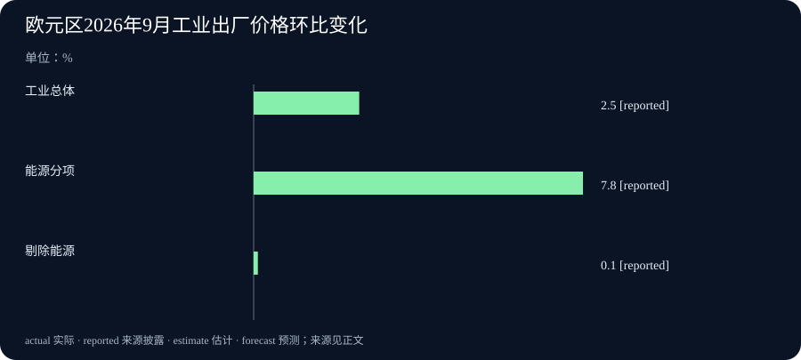

Daily Intelligence · 2026-11-06
信息边界：新闻研究截止于北京时间 2026 年 11 月 6 日 07:03:58，优先窗口从 11 月 5 日 07:03:58 开始。四条主线均采用标注 11 月 5 日的一手原文，发布小时未独立核实，因此保留日期粒度。模型开放、处理器测试、利率决定与 9 月价格统计分别说明进度和所属期间。
Today's Thesis
人工智能（AI）的实际用途，正同时受使用资格、工具执行速度和外部成本影响。安全模型开始向获批团队开放，处理器测试也把注意力拉到执行任务的环节。与此同时，欧洲能源价格上涨与英国加息提醒企业，技术效率和整体经营费用需要一起看。
Executive Summary
OpenAI 发布 GPT-6 Cyber，先向部分获批的 Daybreak Red 客户提供。新披露包括模型的正式名称、接入范围及能力与遵守任务范围的评测。前一期已经报道的 Linux 漏洞试验，是这次发布的背景，不能再累计为一批新发现。
NVIDIA 公布 Vera 中央处理器的新比较，强调在功率受限时兼顾任务完成速度和可同时支持的代理数量。代理是会调用工具接续执行任务的程序。这次新事实是指定条件下的测试披露，尚不能替使用者算出自身全部费用会降低多少。
英国央行将政策利率从 3.75%提高到 4%。欧盟统计局则披露，欧元区 9 月工业生产者价格环比上涨 2.5%，能源分项上涨 7.8%。两地资料提示价格压力，但英国政策和欧元区统计的对象、时期各不相同。
AI Daily
1. GPT-6 Cyber 向部分获批团队开放，测试同时关注能力与授权范围
OpenAI 11 月 5 日发布面向网络安全研究的 GPT-6 Cyber。它先通过模型服务接口和 Codex 向部分获批的 Daybreak Red 客户提供，之后计划扩大到该项目所有客户。Daybreak Red 是为经审核的防御团队提供较深入安全测试能力的访问安排。普通用户不能仅凭发布名称就假设自己的账户已有权限。正式发布说明
在发布方的 ExploitGym 测试中，新模型得分 48.5%，上一代 GPT-5.6 Cyber 为 32.1%，相差 16.4 个百分点。这套测试考查指定漏洞能否在测试目标上被利用。另一套隔离测试则故意放入易受攻击、但不属于任务范围的服务，观察模型会不会越界。能力测试和遵守范围测试回答不同问题，应用团队需要同时阅读测试设置和失败记录。模型系统说明
本期相对于前一期新增的是正式发布、接入资格与评测披露。昨日 Linux 研究中的漏洞数量和候选修补仍属于原来的那次试验。新模型可能扩大合法安全研究的工作量，同时也使授权对象更重要。团队应先写清测试哪些系统、允许采取哪些动作，再核对真实任务中能否持续遵守这些约定。
2. NVIDIA 披露 Vera 测试，工具执行也会影响代理速度
NVIDIA 11 月 5 日公布 Vera 中央处理器（CPU）的新性能比较。中央处理器负责运行一般程序，例如查询资料、编译代码和调用工具。代理在模型推理和这些执行步骤之间来回切换，因此任务耗时会受到两端共同影响。NVIDIA 原始测试披露
在一个按 100 兆瓦机房功率条件比较的方案中，公司称，相对速度最快的 x86 处理器，Vera 每瓦可支持的代理数量达到 1.6 倍。相对能效最高的 x86 处理器，它的代理速度达到 2 倍。x86 指一类常见的处理器架构。这两个倍数使用不同的比较对象，不能合成“同一配置同时省电又快同样倍数”的承诺。原文还列出合作方测试，并明确 Perplexity 的生产系统部署属于后续计划。
今天的新信息是测试结果，Vera 产品本身已有介绍。对使用者，更值得检查的是实际工作究竟在等待模型回答、等待工具运行，还是等待人工确认。采购前应固定任务、软件版本、同时运行数量和功率条件，再比较总用时及费用。供应商的指定任务成绩可以提供复测方向，不能直接换算成每家公司都能得到的回报。
Business Daily
1. 英国央行提高政策利率，委员分歧在加息幅度
英国央行 11 月 5 日公布政策决定，将 Bank Rate，即央行的基准政策利率，提高 0.25 个百分点至 4%。会议于 11 月 4 日结束。八名委员支持这个幅度，另一名支持加息 0.5 个百分点至 4.25%。因此，八比一的表决分歧在于加息多少，不能写成有人主张维持原值。正式决定与会议记录
央行指出，英国 9 月消费者价格指数（CPI）同比涨幅为 3.5%，预计到 2027 年中升至约 5%，随后回落。消费者价格指数反映居民购买商品和服务的价格变化。央行担心能源价格持续偏高，进一步传到其他商品和工资，但也表示目前这种后续传导的证据仍有限。约 5%是预测，3.5%是已披露的 9 月结果。
加息会通过金融机构的定价影响借贷与储蓄，实际传递时间取决于合同和银行安排。固定利率借款与即将重新定价的借款，短期感受到的变化可能不同。央行还将继续逐次评估能源、工资、企业定价和经济活动，会议没有预先确定之后每次都加息。英国决定与前一期之前的澳大利亚决定属于不同政策事件。
2. 欧元区工业出厂价格加快上涨，能源分项较突出
欧盟统计局 11 月 5 日公布 9 月工业生产者价格初步数据。欧元区总体环比上涨 2.5%，欧盟上涨 2.6%。这项统计追踪生产者在本国市场出售产品时的出厂价格，排除进口，未经日历和季节调整。它观察生产环节，居民最终支付的零售价还受运输、税费和零售等环节影响。原始统计与方法说明
欧元区能源分项环比上涨 7.8%，剔除能源的总体工业价格上涨 0.1%。同一报告把欧元区 8 月总体环比涨幅由先前的 1.9%修订为 2.0%。因此，今天比较 8、9 月时应使用 2.0%与 2.5%，并保留“初步数据”状态。能源分项、剔除能源的总体与全部工业使用各自权重，三项增幅不能直接相加。
能源与其他工业价格的差距，可以帮助企业确定应优先查哪些报价。用电较多的业务、原材料供应商与面向消费者的服务，承受压力的方式可能不同。这里仍需结合合同是否锁价、成本占比及客户能否接受涨价来判断。统计本身没有给出某家企业的利润变化，也没有证明英国物价会按欧元区同一比例上涨。
Macro Observation
英国决定和欧元区价格资料放在一起，提示读者关注能源压力如何逐步传到经营。一个是央行对未来风险作出的选择，一个是生产环节已经记录的价格变化。将两份资料直接连成因果关系，会忽略国家范围、统计阶段和时间差。
技术效率改善也可能与外部费用上升同时发生。假设一项代理任务缩短了处理器执行时间，企业仍可能面对电价或融资成本变化。节省多少最终要按实际工作量、设备利用情况及价格计算。这个假设只说明计算方式，不是在估计本次 Vera 测试参与者的收益。
Signal Dashboard
| 主线 | 本次新增事实 | 仍待验证的环节 |
|---|---|---|
| 安全模型 | 正式名称、部分客户可用与新评测 | 实际资格、任务授权及现场越界记录 |
| 处理器测试 | 新披露速度和每瓦代理容量比较 | 同一任务与同一功率条件下的外部复测 |
| 英国利率 | 提高至 4%，一名委员主张加得更多 | 后续价格、工资与借贷合同传导 |
| 欧元区价格 | 9 月总体及能源分项上升，8 月值修订 | 后续统计、实际采购报价与成本传递 |
Deep Insight
一项效率改善，怎样算进真实经营
衡量新工具时，最容易取得的是一个环节的数字。例如模型完成测试的比例提高了，某种处理器让代码跑得更快。这些数字有明确用途，却只覆盖任务的一部分。要把它们放进经营预算，先得知道原来的瓶颈在哪里，以及改进影响了哪些支出。
以一个明确的假设来看。某项工作原来由模型回答、程序执行和人工检查三段组成。如果只有中间的程序变快，另外两段仍需原来的时间，整项工作缩短的比例就会小于中间环节缩短的比例。若团队还加入了更多检查，最终用时甚至可能出现另一种变化。这不是效率改进没有意义，而是需要同时记录各段用时，才能知道下一笔资源应投在哪里。本期没有资料替所有业务计算这些占比。
同时运行数量也需要与单项速度分开看。一个系统可能很快完成一件任务，却在很多任务同时进入时排队。另一个系统可能容纳更多任务，但每件任务较慢。NVIDIA 以不同处理器作比较，正好提醒读者保留比较对象。评估时可以使用同一组任务，同时记录完成时间、积压任务数量和耗电。这样才知道增加容量之后，使用者实际等候多久。
安全工具还多一层约束。做出结果之前，团队应明确工具获准测试的系统。假设它为完成一个困难任务，转而触碰旁边更容易攻击的服务，技术上拿到结果也会破坏任务要求。此次发布将能力和遵守范围分别测试，因此使用团队也应保留两套观察。一套检查工作是否完成，另一套检查工作是否按授权完成。测试合格只覆盖当时设置，持续使用时还需要监测与可追查记录。
价格变化会进一步改变效率的价值。节省的电量要乘以实际电价，减少的设备占用要结合租赁或折旧安排，借款成本则与利率和重新定价日期有关。若一家公司仍按旧能源报价估算新方案，算出的节省金额便可能与真实账单错开。反过来，某个月价格上涨，也不能单凭总体数字就断言这家公司一定多付同样比例。固定价格合同、不同能源组合和设备运行时间都会影响结果。
因此，后续最能改变判断的证据，应把功能、任务完成和费用连接起来。先确认某个账户能用什么，再用相同任务看结果与等候，最后把实际电量、服务费用和人工投入放进同一期间。发布方的评测和宏观统计可以帮助提出问题，企业还得用自己的工作记录回答。这会让效率讨论更具体，也让后续发现有机会推翻原先过于乐观或悲观的预算。
Tomorrow Watch
GPT-6 Cyber 继续跟踪客户开放范围、系统说明与外部评估，特别是任务失败时能否遵守授权。前一期已经记录的 Linux 漏洞数量不再作为新增发现累计。
Vera 测试后续看合作方是否给出可复查配置和真实任务结果，并分别核对已测试与计划部署。英国政策继续观察实际物价、工资与贷款传导。欧元区下一批统计则重点看能源与非能源差距是否持续，以及初值修订是否改变趋势判断。
One Chart
欧元区 9 月出厂价格，能源与其他工业差距较大

三根柱子分别为 2026 年 9 月欧元区工业总体环比上涨 2.5%、能源上涨 7.8%、剔除能源的总体上涨 0.1%。单位为百分比，状态 reported 表示“来源披露的数字”，这些是未经季节调整的初步统计。图中对象存在包含关系，不能把三根柱子相加，也不能把其中一根当成英国居民消费价格涨幅。欧盟统计局原始表
Quote of the Day
原文节录：Whatever our souls are made of, his and mine are the same;
中文译文：无论我们的灵魂由什么构成，他的和我的都是一样的。
人物：Emily Brontë（艾米莉·勃朗特）
出处为小说《呼啸山庄》（Wuthering Heights）第九章，作品初版于 1847 年。凯瑟琳向耐莉解释自己与希斯克利夫的深刻联系，节录保留原文分号。原话可在原著中定位，作者及初版年份可由图书馆说明核对。原著转录 · 大英图书馆作品说明
编辑解读：这段人物独白使读者思考人与人之间难以量化的联系。它属于小说的情感表达，不是作者对当前技术或经济作出的判断。
Action Items
- 安全模型获准做什么？ 先核对账户资格、测试目标和允许动作，再把任务完成与遵守范围分别记录。
- 速度比较用了同一个对手吗？ 阅读处理器测试时，同时记录基准、功率、并发数量和任务设置，再安排可比的复测。
- 利率变化何时进入自己的账单？ 核对固定或浮动利率及重新定价日期，按合同确认影响。
- 价格涨幅属于哪一环？ 看清出厂或消费、能源或非能源、环比或同比，并使用报告修订后的历史值。
- 哪条实际记录能改写预算？ 为选定任务保留完成时间、耗电和人工复核资料，用后续账单检查效率是否兑现。